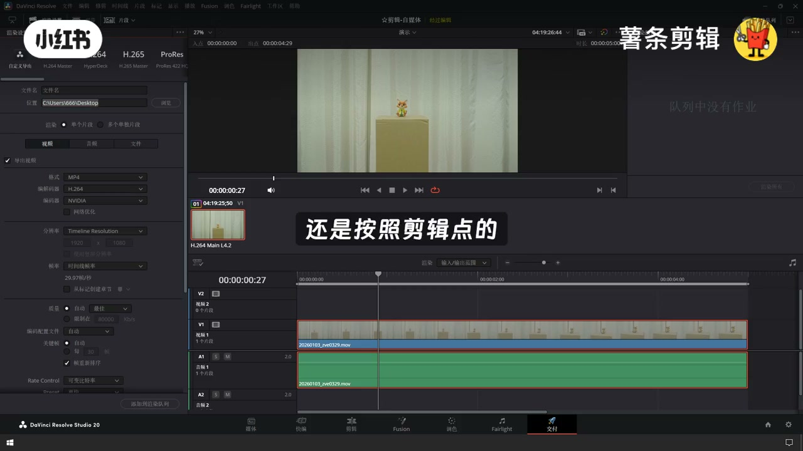
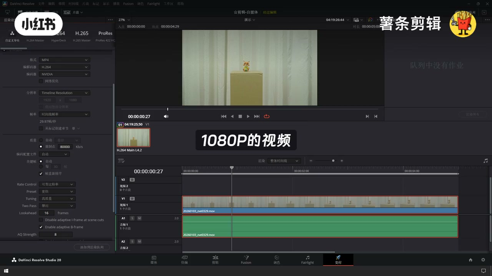
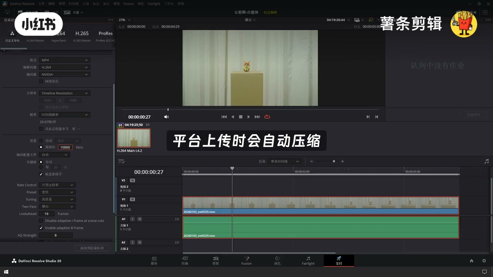
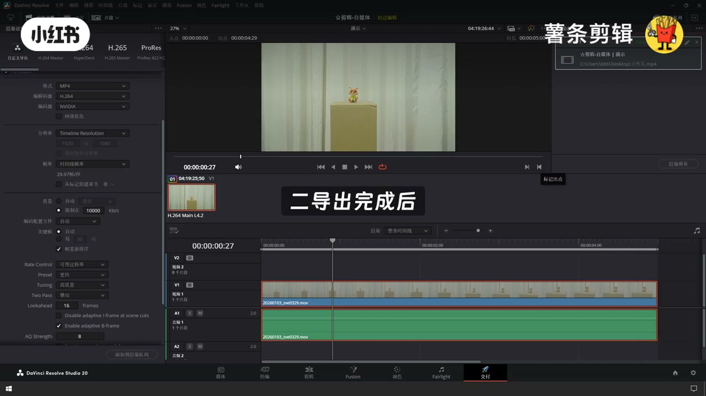

内容要点
「达芬奇交付输出最终成片导出参数设置教程视」教程要点：达芬奇的交付设置直接决定成品画质和文件大小 → 输出设置出错会导致画面变色、画质模糊 → 首先要确保剪辑时间线设置正确 → 时间线参数是输出的基础…
知识结构
达芬奇的交付设置直接决定成品画质和文件大小
通用场景、自媒体、朋友圈、本地播放
4K的视频可以限制在4万左右
- 达芬奇的交付设置直接决定成品画质和文件大小
- 输出设置出错会导致画面变色、画质模糊
- 首先要确保剪辑时间线设置正确
- 时间线参数是输出的基础
- 必须与素材参数最终需求一致
达芬奇的交付设置直接决定成品画质和文件大小
00:00–00:48达芬奇的交付设置直接决定成品画质和文件大小
达芬奇的交付设置直接决定成品画质和文件大小；输出设置出错会导致画面变色、画质模糊；首先要确保剪辑时间线设置正确；时间线参数是输出的基础；必须与素材参数最终需求一致；否则会出现画面拉伸、卡顿等问题；做好前期准备后进入核心的交付设置环节；默认导出整个时间线；若只需导出部分片段；可以手动设置入点和出点；左侧最上方是预设模板；下方是自定义参数；先设置文件名和保存路径；渲染单个片段和多个片段的；就是一整个视频导出；还是按照剪辑点的位置分多个视频导出；这边选择单个片段；格式选择MP4；达芬奇支持多种格式；不同格式适配不同场景
00:48–01:27通用场景、自媒体、朋友圈、本地播放
通用场景、自媒体、朋友圈、本地播放；格式选MP4；编码选H264；MP4兼容性最强；几乎所有设备、平台都支持；H264编码压缩率适中；能在保证画质的同时控制文件大小；导出速度也较快；适合网络传播和移动设备观看；分辨率和帧率；默认与时间线相同；无需手动调整；质量就是码率；直接决定视频画质；码率越高,画质越好；但文件体积越大,导出速度越慢；新手默认自动即可；若想手动优化；选择限制为输入具体码率值；1080P的视频可以限制在1万左右

01:28–02:044K的视频可以限制在4万左右
4K的视频可以限制在4万左右；重点提醒下；不要将码率设得过低；比如低于5000；画面会出现模糊、色块；也不要过高；会造成存储空间浪费；平台上传时会自动压缩；下面的这些参数都默认就可以了；调整完毕后；点击添加到渲染对列；会出现渲染任务；再点击全部渲染即可开始导出；导出期间注意两点；一不要关闭达芬奇；不要操作电脑大型软件；二导出完成后；先打开文件预览一遍；检查画质、色彩、樱花是否同步；确认无误后再交付或上传



口述/画面要点（40段）
结合 Whisper medium 与画面大字整理；专有名词已校对。
达芬奇的交付设置直接决定成品画质和文件大小
输出设置出错会导致画面变色、画质模糊
首先要确保剪辑时间线设置正确
时间线参数是输出的基础
必须与素材参数最终需求一致
否则会出现画面拉伸、卡顿等问题
做好前期准备后进入核心的交付设置环节
默认导出整个时间线
若只需导出部分片段
可以手动设置入点和出点
左侧最上方是预设模板
下方是自定义参数
先设置文件名和保存路径
渲染单个片段和多个片段的
就是一整个视频导出
还是按照剪辑点的位置分多个视频导出
这边选择单个片段
格式选择MP4
达芬奇支持多种格式
不同格式适配不同场景
通用场景、自媒体、朋友圈、本地播放
格式选MP4
编码选H264
MP4兼容性最强
几乎所有设备、平台都支持
H264编码压缩率适中
能在保证画质的同时控制文件大小
导出速度也较快
适合网络传播和移动设备观看
分辨率和帧率
默认与时间线相同
无需手动调整
质量就是码率
直接决定视频画质
码率越高,画质越好
但文件体积越大,导出速度越慢
新手默认自动即可
若想手动优化
选择限制为输入具体码率值
1080P的视频可以限制在1万左右